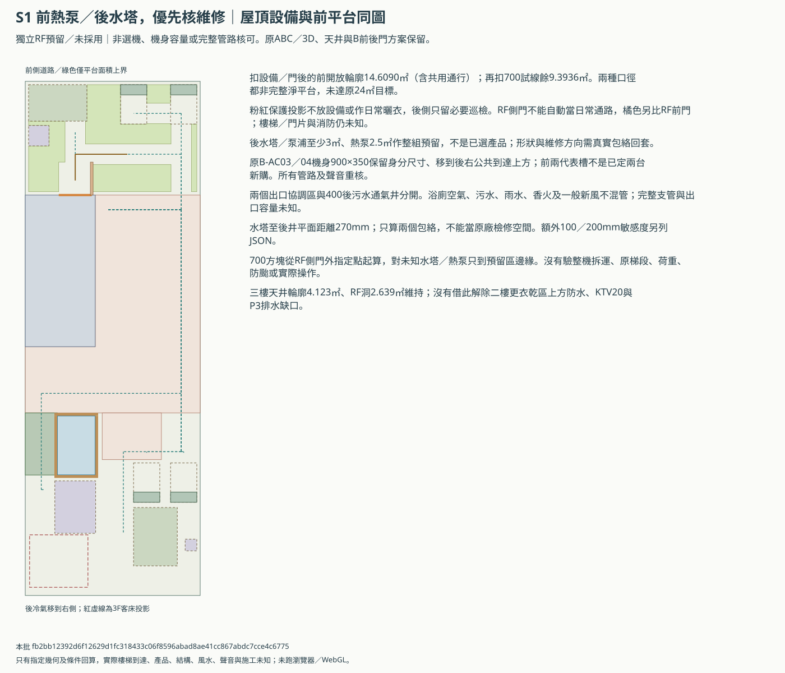
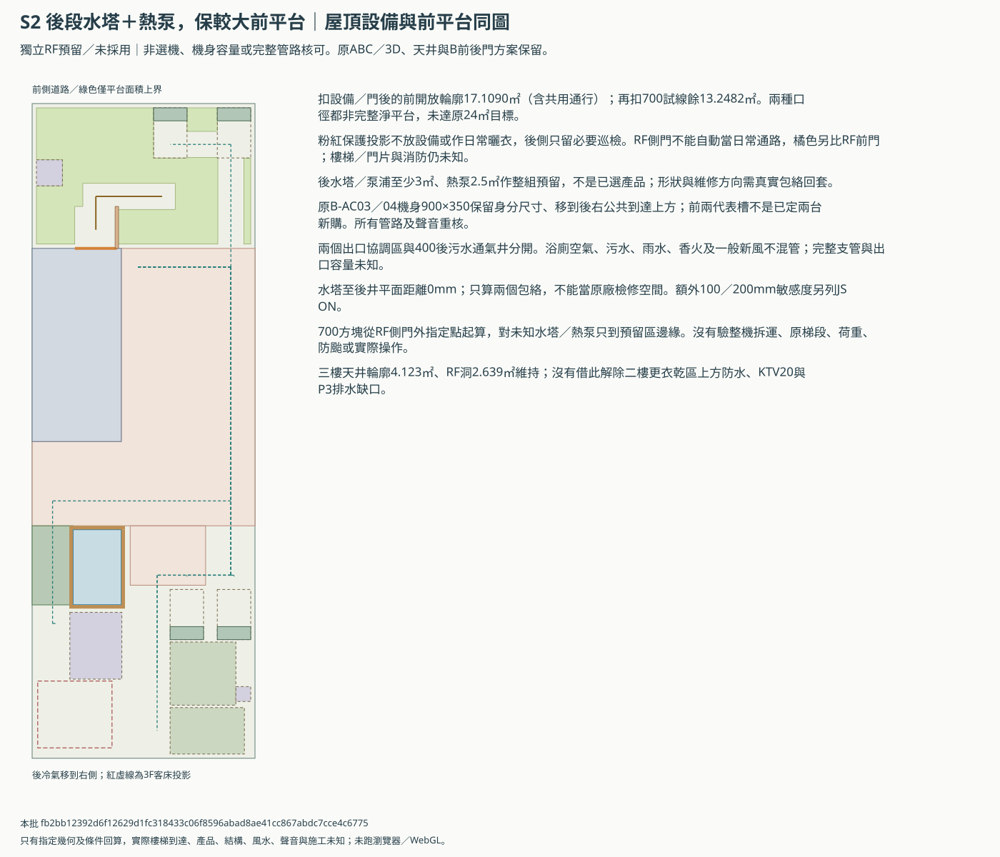
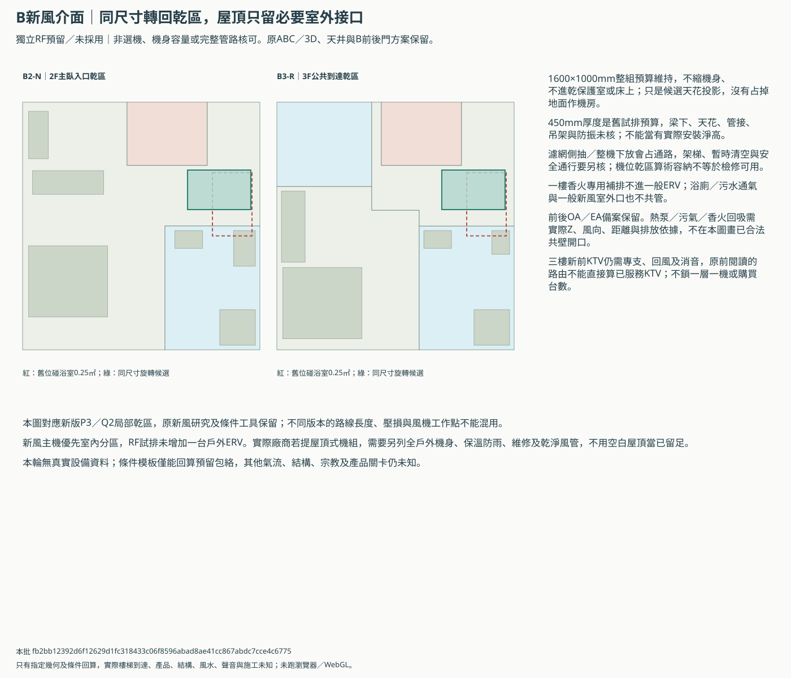

B屋頂設備、曬衣與新風介面
獨立預留比較／未採用。原24㎡RF活動曬衣、三樓4㎡工作陽台及家規均保留。原ABC／3D、R0／R1／R2與搬轎版本不變。
先請建商比較S1前熱泵的維修／振動代價，S2留作較大前平台的備案；兩者都保原24㎡目標缺口，不硬塞後保護區。後冷氣移開新版客床，新風仍留室內分區但舊座標須調整。實際設備、RF前門及完整支管未核，不選定機型或併原3D。
| 方案 | 扣設備／門的開放輪廓㎡（含通行） | 再扣700試線的餘塊㎡ | 原24㎡目標 | 水塔到後井mm |
|---|---|---|---|---|
| S1 前熱泵／後水塔，優先核維修 | 14.6090 | 9.3936 | 仍缺 | 270 |
| S2 後段水塔＋熱泵，保較大前平台 | 17.1090 | 13.2482 | 仍缺 | 0 |
兩種口徑都可能含狹長、不連續餘塊，並非完整平台淨面積；再扣試線是另看專用晾衣餘量，並非宣稱法規禁止通路算面積。RF前帶名義23.4㎡本來就比24少0.6㎡，沒有借後保護區或三樓天井湊足，也沒有把10㎡下限當已接受縮需求。
原後冷氣在新版3F客床上方合計0.2652㎡投影；本批移開比較。舊B2／B3新風各有0.25㎡碰新版浴室，另比同尺寸轉回室內乾區，未選機或保證聲音／天花／檢修。
S1 前熱泵／後水塔，優先核維修


S2 後段水塔＋熱泵，保較大前平台


新風乾區與室外接口


固定位置包絡敏感度
| 方案 | 每邊額外mm | 超出預留屋頂 | 碰其他包絡 |
|---|---|---|---|
| S1-front-heat-pump | 0 | 無列明衝突 | 無列明衝突 |
| S1-front-heat-pump | 100 | heat-pump | 無列明衝突 |
| S1-front-heat-pump | 200 | heat-pump | tank／B-AC03; tank／B-AC04; heat-pump／front-dirty-zone |
| S2-rear-wet-pair | 0 | 無列明衝突 | 無列明衝突 |
| S2-rear-wet-pair | 100 | heat-pump | tank／heat-pump; tank／rear-soil-vent; tank／B-AC03; tank／B-AC04 |
| S2-rear-wet-pair | 200 | heat-pump | tank／heat-pump; tank／rear-soil-vent; tank／B-AC03; tank／B-AC04; heat-pump／rear-soil-vent |
實際資料後回套
每個所需包絡要含機身、通風、檢修與接管，附來源圖號；未知留null。模板綁當前config雜湊，有資料只輸出到新私人目錄，不改公開預設。數值相容也不等於專業核可。
| 方案 | ID | 數值狀態 |
|---|---|---|
| S1-front-heat-pump | tank | pending |
| S1-front-heat-pump | heat-pump | pending |
| S1-front-heat-pump | rear-air-zone | pending |
| S1-front-heat-pump | front-dirty-zone | pending |
| S1-front-heat-pump | rear-soil-vent | pending |
| S1-front-heat-pump | representative-slot-1 | pending |
| S1-front-heat-pump | representative-slot-2 | pending |
| S1-front-heat-pump | B-AC03 | pending |
| S1-front-heat-pump | B-AC04 | pending |
| S2-rear-wet-pair | tank | pending |
| S2-rear-wet-pair | heat-pump | pending |
| S2-rear-wet-pair | rear-air-zone | pending |
| S2-rear-wet-pair | front-dirty-zone | pending |
| S2-rear-wet-pair | rear-soil-vent | pending |
| S2-rear-wet-pair | representative-slot-1 | pending |
| S2-rear-wet-pair | representative-slot-2 | pending |
| S2-rear-wet-pair | B-AC03 | pending |
| S2-rear-wet-pair | B-AC04 | pending |
仍需完整核對
- 沿R1留RF左板帶作獨立設備配置，原R0／R1／R2、Q1／Q2、ABC主3D與兩種搬轎版本不變；本批沒有採用或施工許可。
- 水塔／泵浦與熱泵只預留整組位置，分別至少3與2.5㎡；不是選定產品，也不證明水量、重量、固定、防颱、散熱與檢修成立。
- 原B-AC03／04研究位置壓新版3F客床投影，本批提案移至後右公共到達上方；原尺寸及身分保留，冷媒、冷凝水、最大管長／高差、振動及窗外聲音全部需重核。
- 前兩代表槽只作原三樓設備的替代預留，身分與採購數未定；小移使其留在115mm邊緣預算內，不當新增兩台或替換B-AC03／04。
- 三樓天井地面4.123㎡及RF洞2.639㎡沿用R1；水塔／熱泵避完整祭祀、武轎庫與列明床體，管線與支承不因平面避讓就取得家規或結構核可。
- RF前帶名義23.4㎡本來就小於24㎡活動曬衣目標；扣設備、門片及路線後更少。原24㎡目標保留，10㎡下限不是已同意縮平台；不借後保護區或三樓天井補算。
- 既有RF側門外是祭祀保護投影，只沿用必要巡檢，不當日常曬衣通路。另比RF前門直出前平台，門與樓梯到達平台、消防／屋突及防雨未核；本批不改各層樓梯。
- 後段沒有計日常曬衣面積，通過保護投影只限列明必要巡檢；不為湊24㎡就放寬家規。
- 後浴廁空氣區、前污氣出口區與原400污水通氣井分開留，沒有把浴廁空氣、污水通氣、雨水或一般新風接成一管；出口數量與容量、全部支管尚未核定。
- B1香火源頭排氣及過濾補氣仍獨立，屋頂出口未定不當取消，也不混入一般ERV。新風優先沿既有室內分區方向，不將非戶外機硬搬RF。
- 舊B2／B3新風1600×1000包絡會碰本輪浴室；另比同尺寸轉回乾區，天花450高度、側抽、架梯和整機拆換仍未知，檢修不得讓唯一通路失效。
- 前後OA／EA外口備案保留；熱泵、浴廁污氣與香火可能造成回吸，實際高度、風向、排放權利及廠商距離規定未到，不用平面距離當通過。
- 本批只核固定預留包絡與700方塊，水塔／熱泵未有真實機身；試線到預留區邊緣，不當能實際操作、拆整機或承載。
- S2水塔與熱泵僅隔65mm，水塔與原後井零預留間隙；這是包絡緊迫，不是原廠可用間隙，額外100／200mm敏感度需另看。
- 條件模板只回算所需完整包絡是否在此預留內，不自動移設備、縮需求、選機、併主圖或把數值相容當專業核可；未知不填0。
- KTV額外100mm後19.2079㎡、前量體新增10.647㎡、P3前排水及天井壓2F乾區防水問題仍保留，屋頂試排不解除它們。
equipment-reservations.csv／program-ledger.csv／condition-checks.csv／engineering-replies.csv／conditions-template.json
本批 fb2bb12392d6f12629d1fc318433c06f8596abad8ae41cc867abdc7cce4c6775；未取得結構、風水、通風、聲音或施工核可，未跑瀏覽器／WebGL。